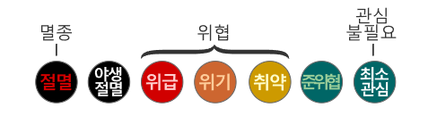

프로젝트 소개글
우리를 둘러싼 자연 환경의 균형이 무너졌을 때, 그 여파는 우리에게도
분명히 다가옵니다.
따라서 야생동물과 자연 서식지를 보호하는 것은 인류의 안전과 행복을 위해서도 필수적인 일입니다.
생태계의 미래를 보호하는 것이 바로 우리가 살고 일하는 터전을 오래도록 보전하는 길입니다.
GGG는 우리의 자연이 더이상 아프지 않도록, 작은 힘들을 모으고 싶습니다.
여러 가지 챌린지를 통해 생활 속에서 작은 실천부터 시작해보는 건 어떨까요?
챌린지 성공을 통해 포인트를 획득하고, 획득한 포인트로 나만의 동물들을 키워보세요.
실천이 힘들때면 환경을 지키고자하는 수많은 동료들과 커뮤니티에서 소통해보세요!
이제 준비가 되셨다면 텀블러에 커피를, 다회용기에 음식을 포장하는 것에서부터 같이 시작해봅시다.
따라서 야생동물과 자연 서식지를 보호하는 것은 인류의 안전과 행복을 위해서도 필수적인 일입니다.
생태계의 미래를 보호하는 것이 바로 우리가 살고 일하는 터전을 오래도록 보전하는 길입니다.
GGG는 우리의 자연이 더이상 아프지 않도록, 작은 힘들을 모으고 싶습니다.
여러 가지 챌린지를 통해 생활 속에서 작은 실천부터 시작해보는 건 어떨까요?
챌린지 성공을 통해 포인트를 획득하고, 획득한 포인트로 나만의 동물들을 키워보세요.
실천이 힘들때면 환경을 지키고자하는 수많은 동료들과 커뮤니티에서 소통해보세요!
이제 준비가 되셨다면 텀블러에 커피를, 다회용기에 음식을 포장하는 것에서부터 같이 시작해봅시다.
취약등급
취약등급
위기등급
위급등급
멸종 위기 동물에도 등급이 있다는 사실,
알고 계신가요?

알고 계신가요?
멸종위기 취약등급 OOO
8월의 동물
힌트!
저는 먹이사슬 최상위에 존재해요.
생의 대부분을 바다와 빙하 주변에서 보낸답니다.